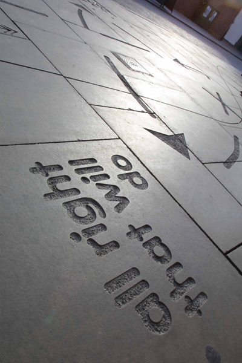

InSite Arts advised and supported the Streetscape Improvements Group of the District Council to appoint an artist to work in a series of the main streets in the town centre. The commission was challenging for the artist as the new public realm had been completed and the art work was to be developed retrospectively. In her work 'Saturday 18th March' Janet Hodgson created a discreet and permanent intervention onto the streets of Stratford upon Avon. The work records a selection of events that the artist witnessed during a visit on Saturday 18th March 2000.
The transcriptions of these actions are sandblasted into the pavements exactly where they took place, the actions have no significance but are just simply happenings. The apparent banality is deliberate in a direct opposition to the most public art which is often a commemoration of an event or of a life of someone considered significant. There is a link within the work to the Theatre, by providing maps or 'scripts of the events'.
- Janet Hodgson
